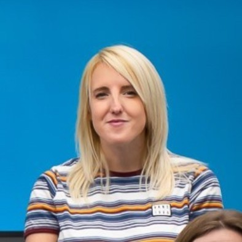

My Resume

Summary
An Agile Business Analyst with strong written and verbal
communication skills and an ability to quickly understand complex,
technical concepts, communicating them to a range of stakeholders,
including technical teams. Possessing a keen analytical mind and a
passion for technology, I am eager to transition from Business
Analysis to contributing to software development. Through this passion and
detemination, I have self-taught skills in HTML and CSS.
Employment
Business Analyst/Business Analyst Apprentice – DWP Digital
June 2022 – October 2023 (Apprentice), October 2023 – Present (SEO BA)
Stakeholder Management and Collaboration
- Built strong relationships with diverse stakeholders using techniques like stakeholder mapping and relationship building.
- Collaborated effectively in multi-disciplinary teams to identify and address complex business challenges.
- Proactively engaged with stakeholders to understand their needs and perspectives.
Business Analysis and Requirements Gathering
- Conducted in-depth business analysis to identify opportunities and define solutions.
- Utilised agile methodologies to deliver value iteratively.
- Eliciting, documenting, and managing requirements using various techniques (user stories, acceptance criteria, process mapping).
- Collaborated with product owners and development teams to prioritise and refine product backlogs.
Project Delivery and Process Improvement
- Contributed to project success through effective planning, execution, and delivery.
- Improved business processes through analysis, design, and implementation.
- Utilised data analysis and visualisation to inform decision-making.
- Mentored team members and shared knowledge effectively.
Technical Skills
- Proficient in Agile ceremonies, Jira, Confluence, and Microsoft Office suite.
- Demonstrated ability to learn and apply new technologies.
Level 4 Business Analysis Apprenticeship
- Successfully completed a Level 4 Business Analysis Apprenticeship with a Merit.
Lead of Computing, E-Safety, History and Geography and Class Teacher – Derbyshire County Council (and additional employers)
May 2016 – June 2022
Curriculum Leadership and Development
- Led curriculum development and implementation in Computing, E-safety, History, and Geography, including digital transformation, staff training, and resource management.
Educational Technology and Innovation
- Pioneered the use of educational technology (Microsoft Teams, Purple Mash) to enhance teaching and learning, leading to improved student outcomes and a successful Ofsted inspection.
Stakeholder Management and Collaboration:
- Built strong relationships with staff, parents, and external partners to drive school improvement, including leading whole-school events and managing complex projects.
Education
- BCS – Diploma in Business Analysis – Merit (May 2022)
- BA(Hons) Primary Education with QTS – First Class Honours – University of Derby (July 2016)
- A-Levels (Fine Art – A, Biology – C, English Language – C) (July 2013)
- GCSEs (Computing – Distinction, English, Science, Maths – B, and six additional GCSEs from A-C) (July 2009)
Skills
- Working with Agile methodologies.
- Project management experience.
- High proficiency in Office products, Jira and Confluence.
- Business Analysis skills, such as investigation techniques, high level process design, stakeholder management and requirements engineering.
- Self taught web development: HTML and CSS.